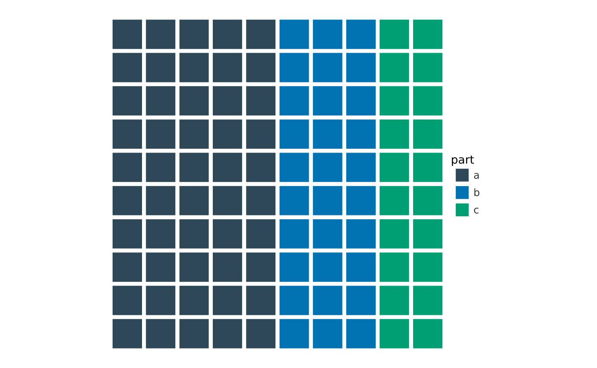

vwaffle() draws a waffle (square pie): a grid of cells coloured by
category, where each category takes a share of the cells proportional to its
count — a part-of-whole chart that is easier to read than a pie because the
eye counts squares. It is a self-contained chart (like vsankey() /
vvenn()): it returns a PlotSpec with no axes.
Usage
vwaffle(
data,
category,
value = NULL,
n_cells = 100,
rows = 10,
flip = FALSE,
pad = 0.12,
width = 5,
height = 5,
dpi = 96
)Arguments
- data
A data frame.
- category
The categorical column that colours the cells (tidy-eval).
- value
Optional per-row weight column; if omitted, each row counts once.
- n_cells
Total number of cells in the grid (default
100). Each category getsround(share * n_cells)cells.- rows
Number of rows in the grid (default
10); cells fill column by column from the bottom-left.- flip
Fill row by row (left to right) instead of column by column.
- pad
Gap between cells, as a fraction of a cell (default
0.12).- width, height, dpi
Page size (inches) and resolution for the standalone chart.
Value
A PlotSpec.
Examples
df <- data.frame(part = c("a", "b", "c"), n = c(50, 30, 20))
vwaffle(df, category = part, value = n)
